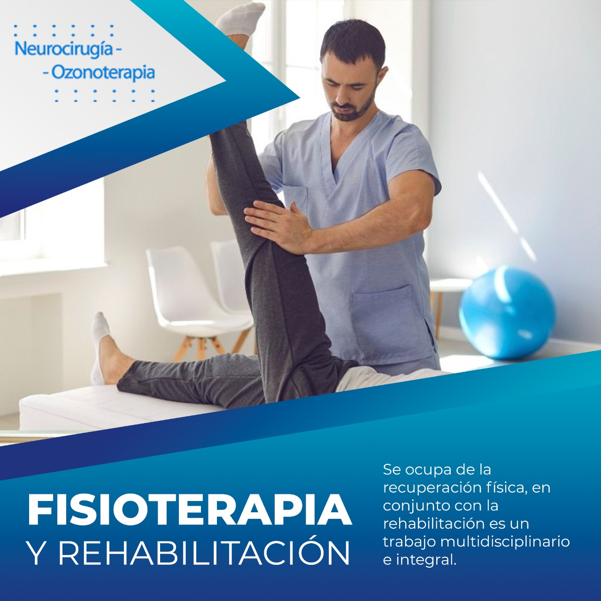

CUADRO DE TELEFONOS Y DIRECCIONES DE CORREO ELECTRONICO DE FILIALES

RECURSOS DOCUMENTADOS
NEUROCIRUGÍA PEDIATRICA
Todo lo referente a neurocirugía Pediatrica, Sintomatología, Tratamientos y mucho mas.
NEUROCIRUGÍA CLINICA
Todo lo referente a neurocirugía Clinica, Sintomatología, Tratamientos y mucho mas.
TECNOLOGIA EN NEUROCIRUGÍA
Todo lo referente a la tecnología aplicada a la neurocirugía, Aparatos, Nuevos avances y mucho mas.
Ahora puedes ingresar a las
revistas virtuales de NEUROCIRUGÍA para conocer casos especiales exitosos.

NEUROCIRUGÍA 1
Consulte la revista virtual Gestión-2021

NEUROCIRUGÍA 2
Consulte la revista virtual Gestión-2020

NEUROCIRUGÍA 4
Consulte la revista virtual Gestión-2021

NEUROCIRUGÍA 5